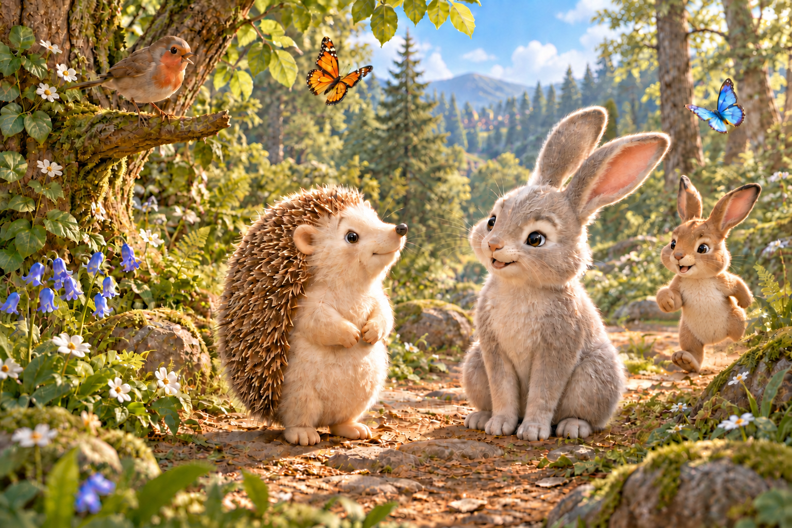
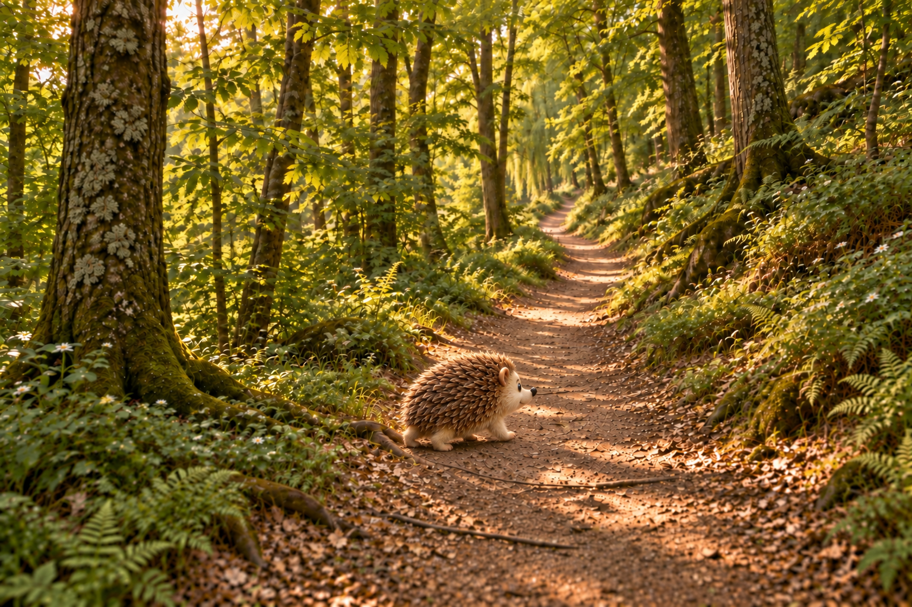
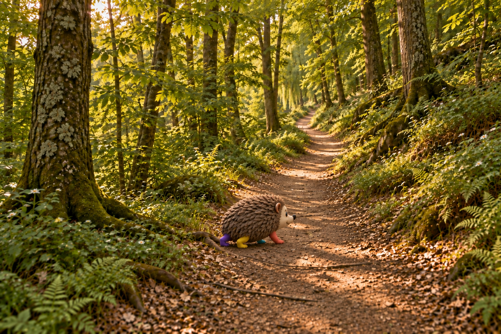

Mr. PinPin / Face comparison
Last finished image before the blocking pipeline, compared with its first finished output.
Existing images only. No regeneration, retouching, sharpening or exposure correction. The close-ups enlarge the original pixels.
The two finished faces
Head sizes are approximately matched on screen. They are not matched in source resolution or viewing angle.
Before the pipeline
Final revision 4 / 280 × 280 source-pixel crop

After blocking and finish
Scene 1a / 100 × 100 source-pixel crop

Earlier face
- The eye is larger and more prominent in the face.
- The rounded cheek, raised muzzle and mouth corner give the expression more readable shape.
- The view is closer to three-quarter, with substantially more source pixels available for facial detail.
Pipeline face
- The eye reads as a narrow vertical oval beneath a simple eyebrow; the muzzle and cheek form a simpler profile.
- The oval eye, eyebrow, projecting snout and smile largely survive from the blocking stage. Finishing added fur and quill detail without substantially redesigning the face.
- The head is much smaller in the full composition. Enlarging it exposes the lower source resolution; it does not recover missing detail.
What passed from blocking into the finish?
This pair uses the same 100 × 100 source-pixel window in both stages. It is the closer comparison of the pipeline itself.
Corrected blocking
Matte character / before fur finishing

Finished output
After the material and fur pass
The prompt constrained the face as well as the legs
The finishing instructions explicitly locked the character's silhouette, pose and gaze, then asked for a materials-only change:
“Input 1 is the inspected color-coded character blocking image and fixes ALL composition, camera, character positions, sizes, silhouettes, poses, gaze directions and limb attachments.”
“Preserve background plate framing, vegetation, lighting, water and landscape as closely as possible; change character materials only.”
My reading: the finish preserved much of the maquette's facial structure while improving its surface. That is consistent with these constraints. It is not proof that a different prompt would reliably solve the problem.
Color coding helped expose an anatomy issue during blocking. One finished scene is not enough evidence that the workflow has solved limb consistency across a chapter.
Both complete images
These establish how much of each frame was allocated to the character, and how different the two performances are.
Before the pipeline
Close encounter / upright character
{kind=link}
After blocking and finish
Wide approach / low walking character
{kind=link}
What this comparison cannot establish
- This is not a controlled before-and-after of the same shot. Camera distance, head angle, pose, lighting and facial pixel budget all differ.
- The earlier image also underwent edits. “Before the pipeline” does not mean “generated in one call.”
- The images alone do not establish a watermarking cause for highlight or texture changes.
Next test, after this review
A direct character render into each untouched landscape plate would avoid inheriting the clay face from a blocking pass. Each scene would start from its own clean plate, rather than a previously edited character scene. Placement, gaze and action can still be specified precisely without rendering a maquette first.
That is a testable alternative, not a guarantee of better faces or correct anatomy. The same face, limb and full-scene review would still be needed. No new character generations were made for this comparison.